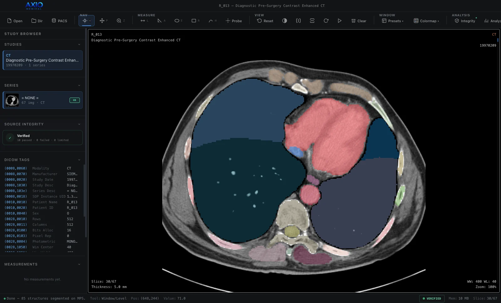
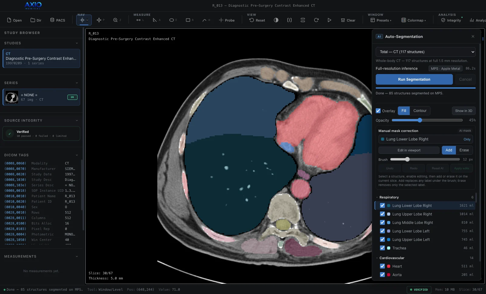
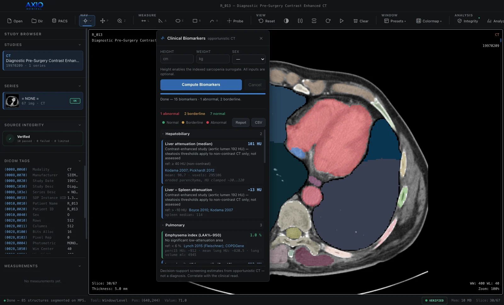
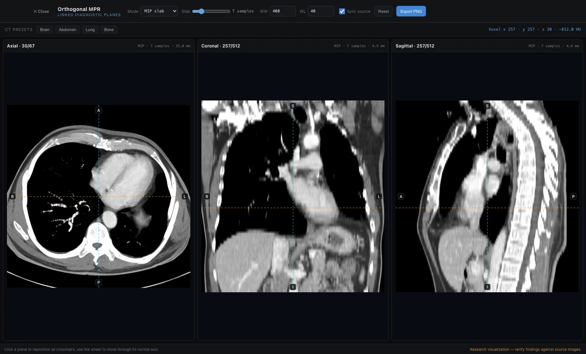
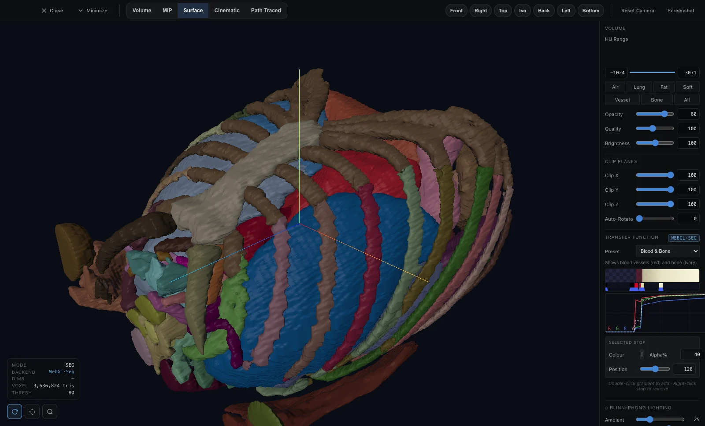
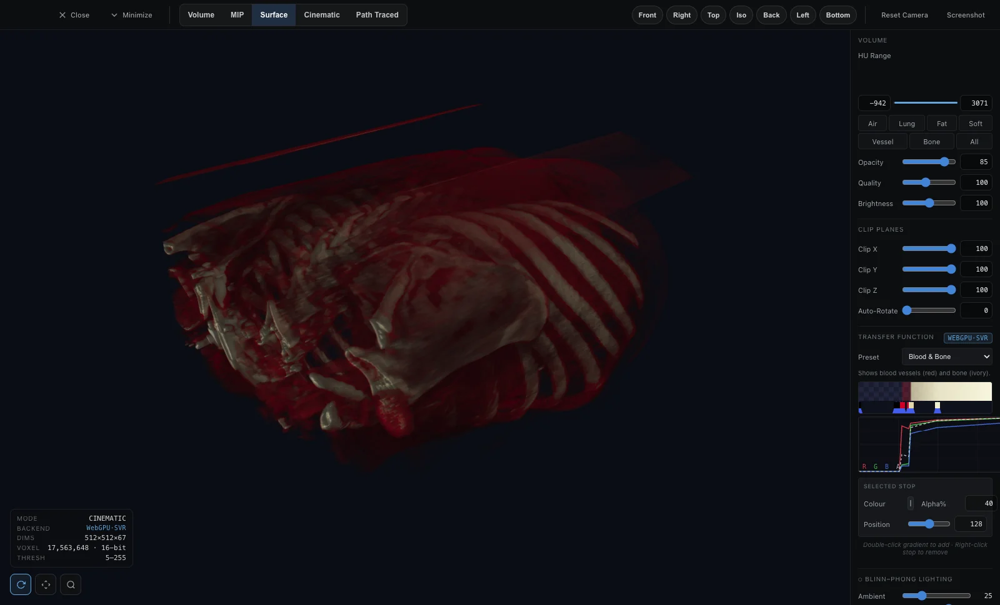
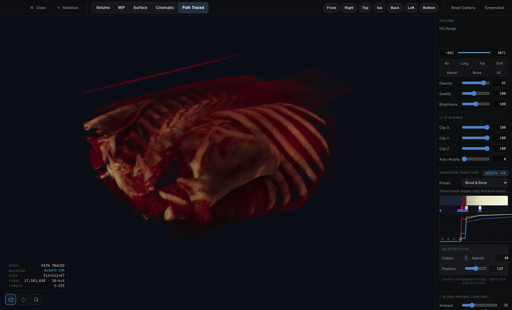
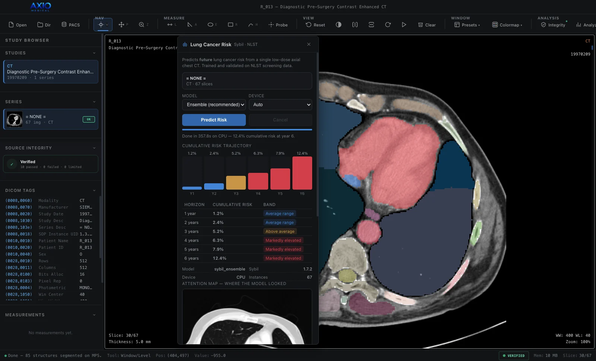

Imaging informatics, on your own workstation. Free.
AXIO Medical turns routine scans into structured, verifiable measurements — segmentation, radiomics, opportunistic CT biomarkers and lung cancer risk — computed locally, alongside your existing PACS, with every number traced back to the source pixels. Images never leave the machine.

- Structures
- 117
- CT structures the segmentation model can label
- Features
- 107
- radiomic features per structure
- Biomarkers
- 15+
- opportunistic biomarkers with literature references
- Offline
- 0
- bytes of patient data sent anywhere
Platform
Three software packages, one installer
AXIO Medical 2.7 includes AXIO Workstation, AXIO Engines and AXIO Connect. They install together, work on the same loaded study, and keep every image on the machine.
-
Desktop application
AXIO Workstation
DICOM and NIfTI viewing and measurement, fail-closed series integrity checks, linked MPR with MIP, MinIP and mean slabs, and volume, cinematic, path-traced and segmentation-surface 3D.
-
On-device AI runtime
AXIO Engines
Segmentation of up to 117 structures, 107 radiomic features per structure, 15+ opportunistic CT biomarkers and lung cancer risk — provisioned on first launch for NVIDIA CUDA, Apple Metal or CPU.
-
PACS link
AXIO Connect
Read-only DICOMweb: QIDO-RS search and WADO-RS retrieval over HTTPS, with session-only credentials and de-identified audit events. It never writes to the archive.
Workflow
From DICOM files to a quantitative report
One desktop application covers the whole path. Each stage feeds the next on the same voxel grid, so every number traces back to the source pixels.
-
01
Load
DICOM, NIfTI and common image formats, or query a PACS read-only through AXIO Connect. CT, MR, X-ray, ultrasound, PET, nuclear medicine and mammography.
-
02
Verify
Fail-closed integrity checks on matrix, spacing, orientation, frame of reference and rescale before anything is reconstructed. A failing series is blocked, not silently rendered.
-
03
Reconstruct
Linked axial, coronal and sagittal planes with MIP, MinIP and mean slabs, plus WebGPU volume, cinematic and path-traced rendering.
-
04
Segment
TotalSegmentator labels up to 117 structures. Review the masks slice by slice, correct them with a brush, and export them as NIfTI.
-
05
Quantify
PyRadiomics features for every structure, and opportunistic biomarkers — steatosis, emphysema, bone density, aortic diameter, organ volumes — each with its reference range and citation.
-
06
Assess risk
Sybil estimates 1–6 year lung cancer risk from a single low-dose chest CT, with an attention map of the regions that drove the score.
AXIO Engines
Four engines, installed for you
On first launch AXIO provisions its own Python runtime and isolated environments. It detects NVIDIA CUDA, Apple Metal or CPU and installs the matching build — no Python, compiler or conda required.
- Auto-segmentationTotalSegmentator 2.17 · nnU-Net 2.8
- Up to 117 structures at 1.5 mm, grouped by system, with per-structure volumes.
- RadiomicsPyRadiomics 3.0.1
- 107 IBSI-aligned features per structure across seven classes, computed on the exact segmentation grid.
- Opportunistic biomarkers15+ measures
- Measurements a routine CT already contains, graded against published thresholds — and left ungraded where a threshold does not apply, such as fatty-liver criteria on contrast CT.
- Lung cancer riskSybil 1.7.2 · NLST
- A 1–6 year cumulative risk trajectory with an attention map. Valid only for low-dose screening CT in the population it was trained on.

Accuracy
Verified against independent references
Quantitative software is only as good as its checks. Each layer of AXIO has been run on a real, public CT series and compared with an implementation that shares none of its code.
-
PASS
Pixel decoding
All 17,563,648 voxels decode to the same Hounsfield values as pydicom — a maximum difference of 0 HU.
-
PASS
Reconstruction
Slice ordering matches 67 of 67, and every MPR plane and MIP, MinIP and mean slab matches numpy reslicing exactly.
-
PASS
Segmentation
The mask produced through the app is voxel-identical to a reference pipeline built directly from the DICOM geometry, and every left- and right-sided organ lands on the correct side.
-
PASS
Biomarkers and radiomics
9 of 9 biomarkers and 10 of 10 first-order radiomic features reproduce exactly when recomputed in plain numpy from the same mask.
Test case
- Dataset
- TCIA LungCT-Diagnosis R_013
- Scanner
- Siemens Sensation 16
- Acquisition
- 120 kVp · 149 mAs · B40f
- Volume
- 512 × 512 × 67 · 5 mm
- Hardware
- Apple M4 · Metal
- Integrity
- 10 / 10 checks pass
These checks found a defect in 2.4.0: the volume handed to the segmentation model was rotated 180°, placing organs on the wrong side of the body. Version 2.4.1 corrects it, and the checks now guard it in the test suite.
Lung volumetry
Aerated lung within each segmented lobe.
| Structure | Volume |
|---|---|
| Right lower lobe | 1,621 ml |
| Right upper lobe | 1,014 ml |
| Right middle lobe | 810 ml |
| Left lower lobe | 755 ml |
| Left upper lobe | 745 ml |
| Total aerated lung | 4,945 ml |
The lobes sum exactly to the independently reported total, and the right lung (3,444 ml, three lobes) is larger than the left (1,501 ml, two lobes), as anatomy requires. Measured on 5 mm slices, so boundary voxels carry some partial-volume uncertainty.
First-order radiomics
Left lower lobe — a sample of 107 features.
| Feature | Value |
|---|---|
| Mean | −796.12 HU |
| Median | −847 HU |
| 10th / 90th percentile | −898 / −630 HU |
| Minimum / maximum | −1024 / 447 HU |
| Entropy | 3.7349 |
| Skewness | 2.9203 |
Physiologically consistent for aerated lung: a mean near −800 HU, a floor at −1024 HU (air) and a tail toward vessel attenuation.
Opportunistic biomarkers
Fifteen measures from the same scan. Each is graded only where its reference applies.
Emphysema index (LAA%−950)
1.0 %No significant low-attenuation area.
ref < 6 % · Lynch 2015 (Fleischner), COPDGene
Trabecular attenuation — L1
150 HUReduced trabecular attenuation — possible osteopenia.
ref ≥ 110 osteopenia / ≥ 160 normal · Pickhardt 2013
Spleen volume
265 mlWithin the typical adult range.
population volumetry
Liver − spleen attenuation
−13 HUReported, not graded: the study is contrast-enhanced (aortic lumen 192 HU), and this criterion is defined on non-contrast CT.
ref > −10 HU (non-contrast) · Boyce 2010, Kodama 2007

How long a full pass takes
- Segmentation
- 84 s
- 85 structures · Apple GPU
- Radiomics
- 120 s
- 85 structures · CPU
- Biomarkers
- 3 s
- 15 measures
- Lung risk
- 358 s
- Sybil ensemble · CPU
About nine and a half minutes end to end on a laptop, with no server and no network. Most of it is the lung-risk ensemble on CPU; choosing a single Sybil model instead finishes that step in about a minute.
AXIO Workstation · Imaging
Rendering tied to the stored values
A WebGPU renderer with a WebGL2 fallback, driven by transfer functions calibrated in Hounsfield units — so what you see follows the data, not an arbitrary colour ramp.




Lung cancer risk
A risk model, used within its limits
Sybil, developed at MIT and trained on the National Lung Screening Trial, estimates cumulative lung cancer risk from one to six years out, and shows where in the scan it looked.
Shown as software output only
Sybil is validated on low-dose screening CT in adults aged 55–74 with a significant smoking history. The example here is a contrast-enhanced diagnostic scan — outside that population — so its numbers demonstrate that the engine runs and are not a valid risk assessment. An attention map is not a detection.

Specifications
What is inside, and what it needs
Bundled engines
| TotalSegmentator | 2.17.0 · Apache-2.0 |
| nnU-Net | 2.8.1 · Apache-2.0 |
| PyRadiomics | 3.0.1 · BSD-3 |
| Sybil | 1.7.2 · MIT |
| PyTorch | 2.13.0 |
| Three.js | 0.160.1 · MIT |
Requirements
| macOS | 11 or later · Apple Silicon & Intel |
| Windows | 10 / 11 · x64 |
| Memory | 16 GB recommended |
| Acceleration | Apple Metal, NVIDIA CUDA or CPU |
| Disk | ~6 GB for the AI runtime, once |
| Network | First-run setup only |
Download
AXIO Medical 2.7.1
Free and MIT-licensed. No account, no licence key, no telemetry.
New in 2.7
Colour segmented structures in 3D by the direction they face in the patient's axes — left–right red, front–back green, head–foot blue — and see the full triangle mesh of every surface as a wireframe. The mesh is even and near-equilateral, and every change to it is checked to stay within 0.05 mm of the surface.
Also since 2.4.1
2.5.0 colours 3D organs by anatomy and smooths segmentation surfaces between slices. 2.6.0 keeps thin vessels and bone edges visible in 3D, and lets you click any point in the 3D view to open it on the original CT slice.
These builds are not signed with a paid code-signing certificate. On macOS, right-click the app and choose Open; on Windows, choose More info → Run anyway if SmartScreen appears. Verify downloads against the SHA-256 checksums in the release notes.